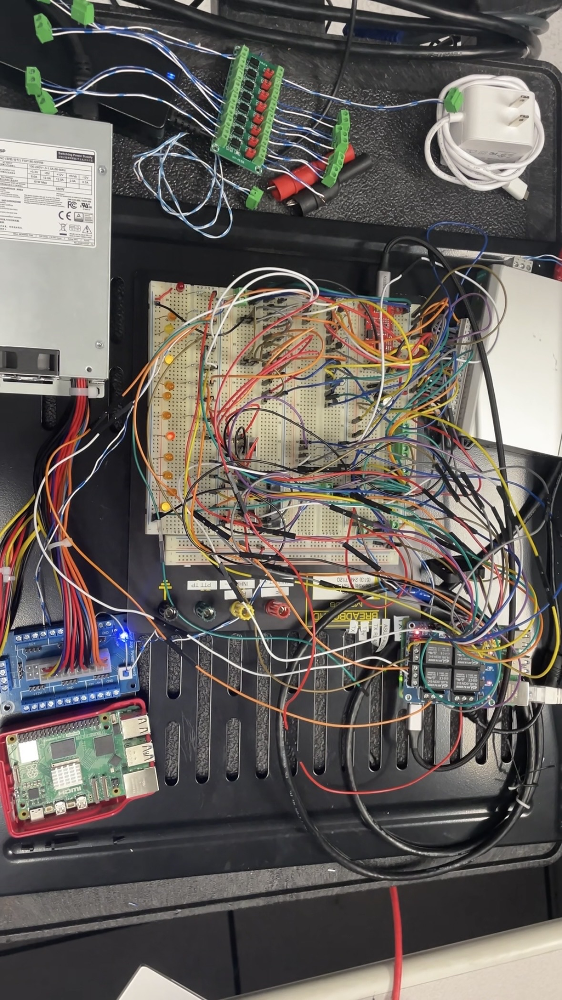

Co-op experience · Summer 2025
Communications Engineering
At NAV CANADA, I designed and delivered a Raspberry Pi-based HF radio-transmitter emulator that allowed engineers to test control, timing, and fault scenarios without depending on the production transmitter.
- Organization
- NAV CANADA
- Term
- May-August 2025
- Location
- Ottawa, ON
- Tools
- Python, Raspberry Pi, GPIO, MOXA I/O, oscilloscopes
01 / Assignment
Build a safe substitute for production hardware.
The emulator reproduced the external control behaviour of an HF radio transmitter used in aviation communications testing. It combined embedded software, GPIO, relays, indicators, industrial 24 V I/O, and custom signal-conditioning circuits.
I owned the work from an initial requirements document through architecture, implementation, electrical integration, verification, and documentation.
- 100+
- Automated tests
- 50+
- System checks
- 3.3 → 24 V
- Industrial interface

02 / Contributions
Three areas of ownership
03 / Outcome
A repeatable way to test across software and hardware.
The completed emulator let engineers exercise transmitter-control scenarios while capturing the electrical, timing, software, and fault evidence needed for review.
Public disclosure: This page excludes source code, exact wiring and pin assignments, internal requirements, detailed timing limits, and non-public documentation.